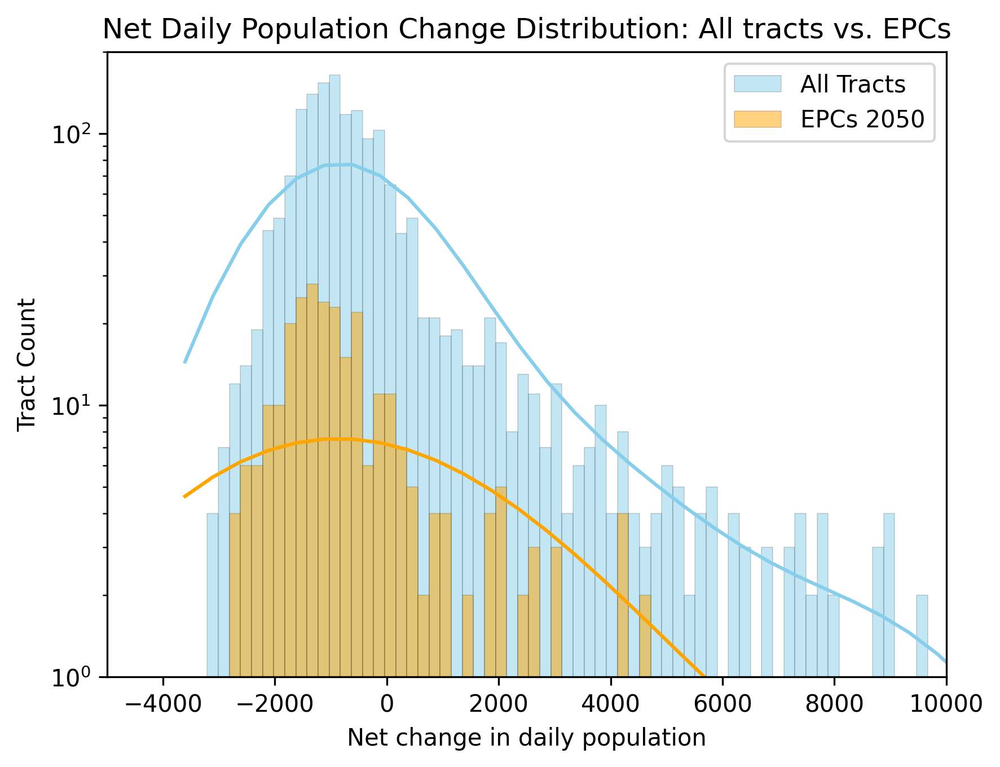
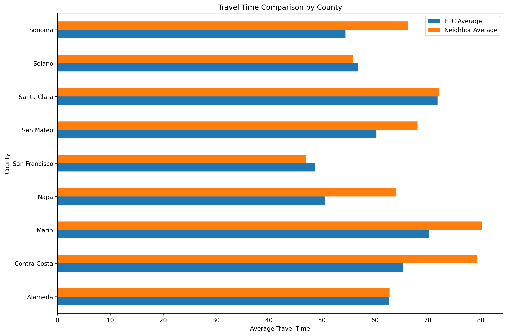

00 — Data & Methods
How we built this
Every analytical choice shapes what the data can and cannot tell us. Here is what we used, why we used it, and where it falls short.
Spatial unit
We aggregated all data to the census tract level. (Why census tract rather than block group or ZIP — e.g. outcome variable only available at this resolution, small cell count instability at finer scale, etc.)
Origin-destination data
LODES8 — (Which year. What it captures: workplace-residential pairs for covered workers. What it doesn't: self-employed, remote workers, federal employees, informal work.)
Commute time data
(ACS Table ID), (year range). (Why ACS self-reported travel time rather than modelled travel times — e.g. reflects actual reported experience, available at tract level, consistent with LODES geography. Or if modelled: why modelled rather than reported.)
Equity Priority Communities
MTC EPC shapefile, (vintage year). EPCs are census tracts identified by MTC as facing compounding disadvantages across income, pollution burden, car ownership, and access to opportunity. We joined EPC designation to LODES tracts by GEOID.
Data cleaning & missing values
(How many tract-level rows in the raw LODES file. How many dropped or excluded and why — e.g. tracts with zero workers, water-only tracts, tracts outside the nine-county Bay Area.)
(Which dark data type applies to the missing observations — e.g. are tracts with missing ACS commute data missing at random, or systematically in lower-population tracts? State the type and explain your reasoning.)
(What you did with missing values: dropped / imputed / flagged. Why that choice was most defensible given the dark data type identified.)
01 — Setting the scene: Daytime Population
The distribution of people in the Bay Area looks very different during the day than it does at night
Where people live and where they work are two very different maps. Residential population, the geography we're most used to, tells us where people are in the evenings. However, during working hours a very different spatial pattern emerges.
Using LODES8 origin-destination employment data, we mapped where the Bay Area's workers are located at night (their home census tracts) and where they are during the day (their workplace census tracts). The contrast reveals the scale of the region's daily spatial reorganization. Note the scale difference between the maps!
Figure 1. Residential distribution of Bay Area commuters by census tract. LODES8.
Figure 2. Workplace distribution of Bay Area commuters by census tract. LODES8.
The difference between these maps is clear, but the real story is found in the direction and distance of the commute flows, and in who is making them.
(Caveat specific to this section's finding — e.g. net worker change reflects covered LODES workers only; self-employed and remote workers are excluded, which may disproportionately affect certain tract types.)
(One question this result raises but the analysis doesn't answer — e.g. Has the spatial mismatch between EPC residents and job centres grown or shrunk since 2019?)
02 — The flow of commuters
Some places fill up during the day. Others empty out.
The difference between nighttime and daytime worker population - the net change from night to day - reveals which parts of the Bay Area absorb workers from elsewhere, and which areas export them.
Job centers like downtown San Francisco and Santa Clara County see large daytime population increases, while residential areas see large outflows. The map and chart below show this daily ebb and flow across the region.
Figure 3. Net change in worker population (night to day) by census tract. LODES8.

Figure 4. Net daytime worker population change by Bay Area county. LODES8.
These flows represent millions of commutes every workday. Is the burden of these commute flows shared evenly between workers, or does it fall harder on some residents than others?
(Caveat specific to this section's finding — e.g. net worker change reflects covered LODES workers only; self-employed and remote workers are excluded, which may disproportionately affect certain tract types.)
(One question this result raises but the analysis doesn't answer — e.g. Has the spatial mismatch between EPC residents and job centres grown or shrunk since 2019?)
03 — Equity Priority Communities
Equity Priority Communities experience the outflow differently
Equity Priority Communities (EPCs) are census tracts identified by MTC as areas with residents who face disadvantages such as lower incomes, higher pollution burden, lower car ownership, and limited access to opportunity. Are they also disadvantaged by their commute burden?
Below we look at the distribution of in- and out-flows from EPCs in orange, and compare this with that of the whole Bay Area, in blue.

Figure 5. Net daytime population change, EPC vs all Bay Area tracts. LODES8 + MTC SOURCES SOURCES SOURCES.
Comparing the net change distribution for EPC tracts against all Bay Area tracts shows that there is no strong observable difference between the distribution for EPCs and non-EPCs across the Bay Area as a whole. The peak of both distribututions falls between in the negative region, showing that across the board, tracts most commonly experience a loss of workers during the day. The difference between EPCs and the wider Bay Area becomes apparent when looking at the positive tails - EPCs include far fewer employment hotspots than the wider Bay Area, if any.
The proportion of in- and out-flows from EPCs are similar to the rest of the Bay Area, but are the commutes themselves longer for EPCs?
(Caveat specific to this section's finding — e.g. net worker change reflects covered LODES workers only; self-employed and remote workers are excluded, which may disproportionately affect certain tract types.)
(One question this result raises but the analysis doesn't answer — e.g. Has the spatial mismatch between EPC residents and job centres grown or shrunk since 2019?)
04 — The commute itself
Where are EPC residents going, and how long does it take them?
To investigate the commute lengths of EPC workers, we mapped commute destinations for EPC workers and then modeled travel times by both car and transit.
→ Folium flow map or OD visualization
Figure 6. Commute destinations for workers residing in EPC tracts. SOURCE SOURCE SOURCE.
Figure 7. Average travel time to work for EPC tracts and their neighbors.

Figure 8. Average travel time to work for EPC tracts and their neighbors, for each county in the Bay Area
→ chart goes here
Figure 7. Car travel time distribution for EPC residents. (Or would we want something other than a distribution?)
→ chart goes here
Figure 8. Transit travel time distribution for EPC residents. (Or would we want something other than a distribution?)
Although absolute car and transit travel times can give us some insights, the gap between the transit and car commute lengths reveals how well the transit network serves it's most disadvantaged residents.
(Caveat specific to this section's finding — e.g. net worker change reflects covered LODES workers only; self-employed and remote workers are excluded, which may disproportionately affect certain tract types.)
(One question this result raises but the analysis doesn't answer — e.g. Has the spatial mismatch between EPC residents and job centres grown or shrunk since 2019?)
05 — The car-transit commute gap
EPC residents face a disadvantage in transit access (see if this is actually true lol)
Comparing commute times for EPC and non-EPC residents reveals a compounding disadvantage. EPC residents have worse access to transit options that serve their specific commutes.
Figure 9. Commute times by mode and EPC status. SOURCES SOURCES SOURCES.
Additional minutes by transit vs car for EPC commuters.
Additional minutes by transit vs car for non-EPC commuters.
Share of EPC census tracts that lose population during the working day.
Share of non-EPC census tracts that lose population during the working day. Not sure if this is actually a worthy comparison, but it's an idea
(Caveat specific to this section's finding — e.g. net worker change reflects covered LODES workers only; self-employed and remote workers are excluded, which may disproportionately affect certain tract types.)
(One question this result raises but the analysis doesn't answer — e.g. Has the spatial mismatch between EPC residents and job centres grown or shrunk since 2019?)
Conclusion
The people with the least resources absorb the most commute burden (check this is true lol)
The Bay Area's geography of work creates an unequal distribution of commute time costs. EPC residents, already facing compounding disadvantages, are more likely to have less favorable transit commute alternatives to driving, being underserved by the transit network.
This is not simply a transit access problem. It reflects the spatial mismatch between where EPC residents live and work, a pattern that transit investment alone cannot fully address without coordinated land use and housing policy.
Data sources
- LODES8 Origin-Destination Employment Statistics
census.gov/lehd - (ACS Table ID) American Community Survey
data.census.gov - MTC Equity Priority Communities shapefile, (year)
mtc.ca.gov
Tools & methods
- Python · pandas · geopandas · matplotlib
- Folium · Plotly
- CYPLAN 255, UC Berkeley, Spring 2026
Code & reproducibility
View on GitHubClone the repo and run pip install -r requirements.txt, then execute the notebooks in order from top to bottom.